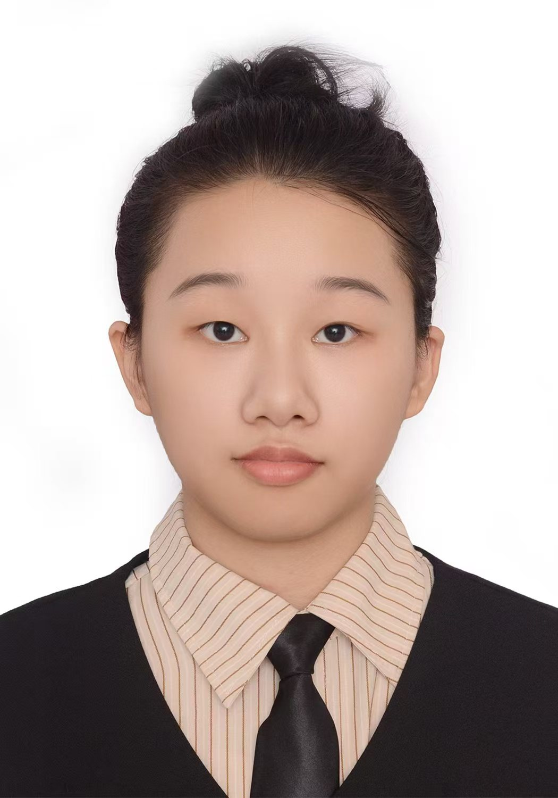

| 姓名 | 吕君蕊 | 性别 | 女 | 年龄 | 19 |  | |
|---|---|---|---|---|---|---|---|
| 籍贯 | 山东省东平县 | 联系电话 | 18854849068 | 电子邮箱 | 3880445021@qq.com | ||
| 学历 | 本科 | 健康状况 | 良好 | 婚姻状况 | 未婚 | ||
| 求职意向 | 软件工程师 | 专业 | 软件工程 | 毕业院校 | 鲁东大学 | ||
| 技能证书 | 大学英语四级证书、计算机二级证书、软件工程师认证证书 | ||||||
| 个人特长与爱好 | 擅长编程，熟练掌握Java、C++等编程语言、建模；爱好游泳和阅读。 | ||||||
| 项目经历 | 参与公司内部管理系统的开发，负责用户模块的设计与实现，提高了系统的用户体验和安全性。 | ||||||
| 自我评价 | 本人具备较强的学习能力与适应能力，在过往的学习和实践经历中，不断探索新的知识领域。在专业学习上，始终保持积极进取的态度，通过系统学习专业课程，掌握了扎实的理论基础。实践方面，曾参与多个项目，在项目中负责不同的工作内容，锻炼了团队协作和问题解决能力。具备良好的沟通能力，能够与不同性格、不同背景的人有效交流，在团队中发挥积极作用。对新事物充满好奇心，乐于尝试新的技术和方法，不断提升自己的综合素养，期望在未来的工作中能够持续成长，为公司创造价值。 | ||||||